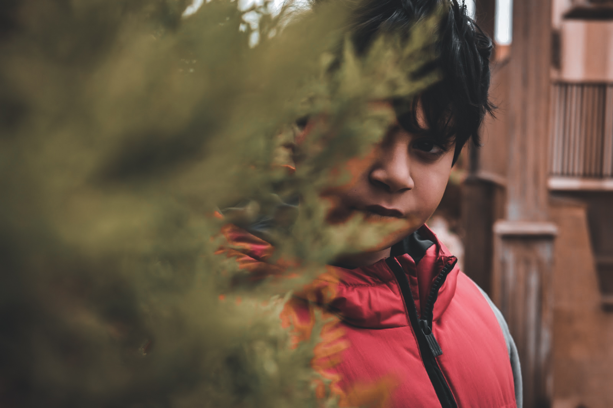
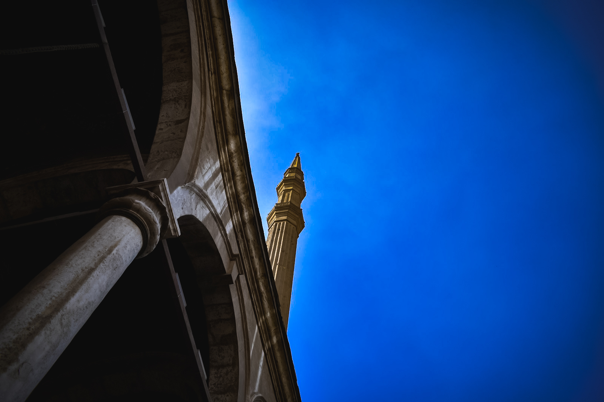

What are the Diffrent styles/types of Photography?
what are the different types of photography. well there are actually 5 types of photography and they are:
- Portrait Photography: Portrait photography, attempts to capture an individual's or group's personality and mood. Photographs may be posing, full-body or close-ups. In any case, the subject's face and eyes are usually sharp. The use of lighting and a background can help to express tone and emotion. 
- Landscape Photography:Landscape photography is the art of capturing an image that captures the beauty of nature. It gives the impression of being there to see something incredible.
- Archetecture Photography:Architectural photography is used to capture both the interior and exterior architecture of buildings and structures. This genre includes a variety of buildings, from warehouses to city bridges to old country barns. The image also highlights the structure's most appealing features, such as a specific beam or archway. It's also possible to highlight intrestin materials and colours. 
- street photography: Street photography at its essence means candid photography of people and humanity. A street photograph has to be a real, unposed moment.
- Night Photography: Night photography is capturing images outdoors at night, between dusk and dawn. its basically landscape photography but its at night!